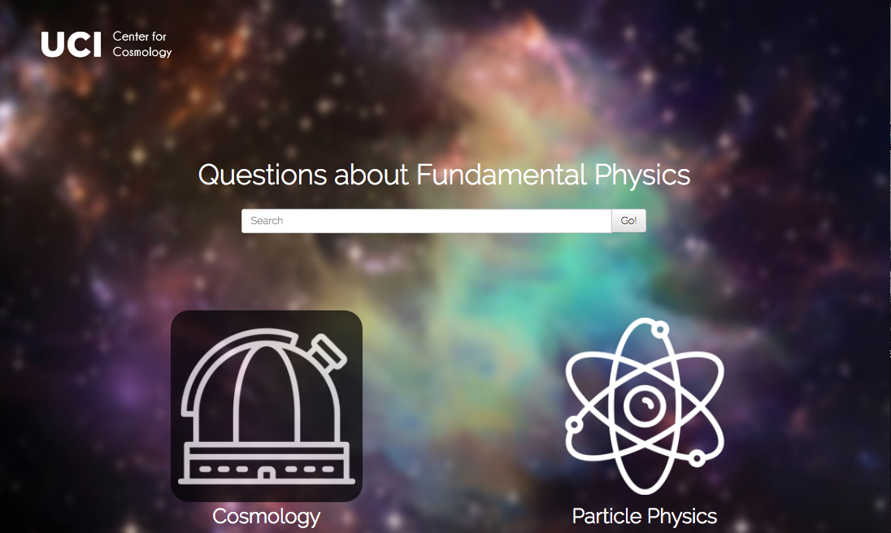

Description: My team and I created a website for a small macaron business.
Skills: Project Management, Website Design
Lessons Learned: I learned how to create Gantt charts, how to communicate effectively with my group members, how to gather requirements from the client, and how to use features and plugins on WordPress to create the website.

×
Course: Project in Human Computer Interaction
Description: My team and I redesigned a website for a physics and cosmology professor at UCI. I was part of the design and user testing team.
Skills: Mockups using Sketch, Usability testing, Technical Writing
Lessons Learned: I learned how to create mockups using Sketch, how to conduct usability testing, and how to analyze the results from usability testing to improve features on the website.
Description: I was assigned to create mockups of a dashboard for an introductory programming course offered at UCI. I had to create user interfaces for students, professors, and TA/Readers based on certain criteria given by my professor.
Skills: Wireframes using Balsamiq, data visualization
Lessons Learned: I learned how to critically think about how to design a UI that would be easy to use for different user groups. I learned how to present data in a visual format that is easy to understand.